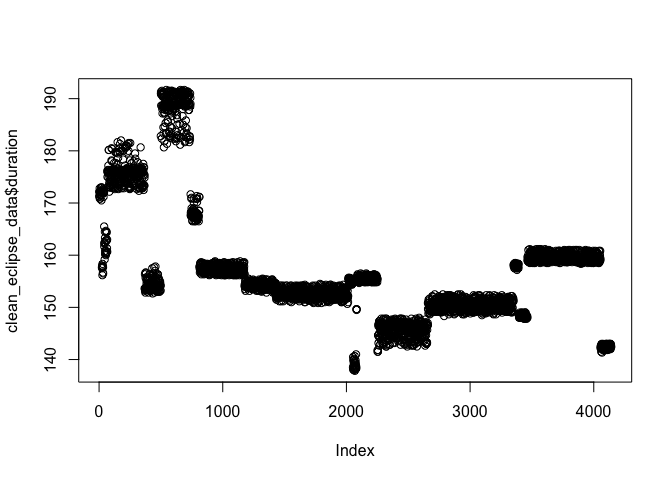

The goal of solarEclipses is to provide easy access to clean and structured data on solar eclipses for analysis and visualization. This R package includes detailed information on various types of solar eclipses, such as total and annular eclipses, along with their key attributes, including date, location, duration, and name.
Installation
You can install the development version of solarEclipses from GitHub with:
# Install the development version from GitHub
devtools::install_github("Fengz924/solarEclipses")Example
This is a basic example which shows you how to load the dataset.
library(solarEclipses)
data("clean_eclipse_data")The following code allow you to see the summary of the dataset:
summary(clean_eclipse_data)
#> state name lat lon
#> Length:4141 Length:4141 Min. :27.22 Min. :-124.45
#> Class :character Class :character 1st Qu.:34.79 1st Qu.: -97.30
#> Mode :character Mode :character Median :38.54 Median : -89.08
#> Mean :37.76 Mean : -91.06
#> 3rd Qu.:41.09 3rd Qu.: -83.68
#> Max. :46.91 Max. : -67.43
#> eclipse_1 eclipse_2 eclipse_3 eclipse_4
#> Length:4141 Length:4141 Length:4141 Length:4141
#> Class :character Class :character Class :character Class :character
#> Mode :character Mode :character Mode :character Mode :character
#>
#>
#>
#> eclipse_5 eclipse_6 duration Type
#> Length:4141 Length:4141 Min. :137.8 Length:4141
#> Class :character Class :character 1st Qu.:150.7 Class :character
#> Mode :character Mode :character Median :154.3 Mode :character
#> Mean :157.2
#> 3rd Qu.:159.2
#> Max. :191.7You can also embed plots, for example:
plot(clean_eclipse_data$duration)

Plot showing eclipse durations by geographic locations.